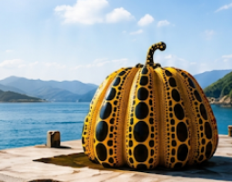
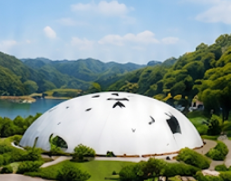
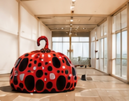
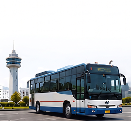
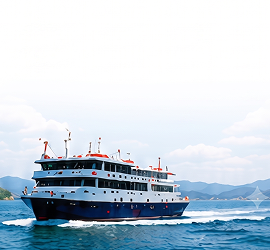
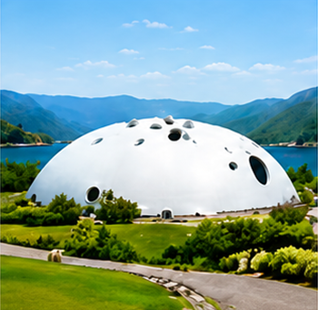
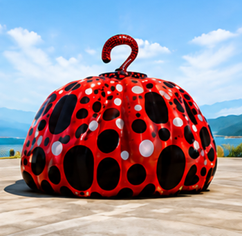
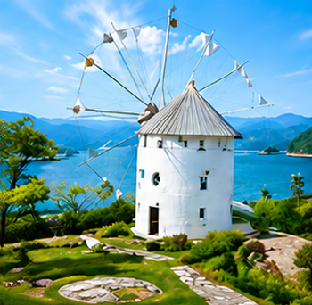
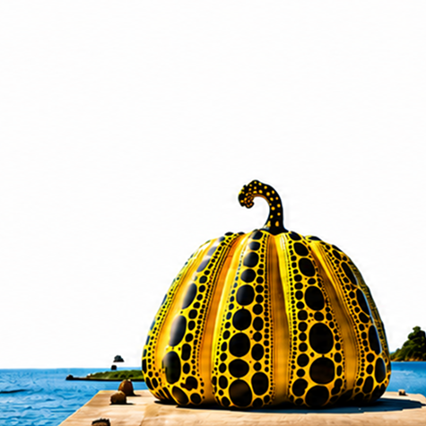
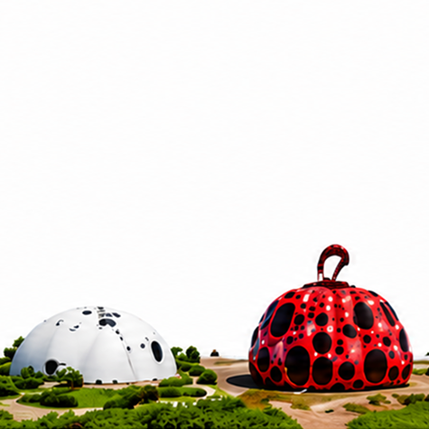

為什麼 2026 最值得去？
藝術祭首度
展期外開放
2026年起，豐島、女木島、男木島、小豆島、大島等地的室內作品將於指定日期定期開放。
更多作品
看得到
過去只能在藝術祭期間欣賞，現在全年有更多機會遊訪藝術島嶼。
共通票券
更方便
女木島、男木島、小豆島、大島推出區域共通票券，一次探索多件作品。
必訪藝術島推薦
直島

- 黃南瓜
- 地中美術館
豐島

- 豐島美術館
- 線的記憶
女木島

- Leandro Erlich
- Nicolas Darrot
小豆島

- 天使之路
- 橄欖公園
- 藝術作品巡禮
高松三大好禮
數量有限，送完為止！ 🎁
01

機場巴士
來回乘車券
輕鬆往返高松機場與市區
02
栗林公園
免費入場券
日本三大名園之一
感受四季之美
03

小豆島免費
來回船票
高松港 ↔ 小豆島
來回船票免費
從高松出發最方便！
直島
約50分鐘
豐島
約35分鐘

高松港
女木島
約20分鐘

小豆島
約60分鐘

推薦行程 | 4天3夜 藝術慢旅！
DAY 1
高松市區
- 栗林公園
- 北濱Alley
- 高松商店街

DAY 2
直島
- 黃南瓜
- 地中美術館
- 本浦港散策

DAY 3
豐島 + 女木島
- 豐島美術館
- 線的記憶
- 女木島藝術巡禮
DAY 4
小豆島
- 天使之路
- 橄欖公園
- 寒霞溪
常見問題 FAQ
沒有藝術祭期間也可以看作品嗎？
可以！部分室內作品將定期開放。2026年起更多機會造訪藝術島。
高松適合自由行嗎？
非常適合！交通便利，跳島方式多元，行程彈性高，適合自由行旅客。
三大好禮如何領取？
依活動辦法於指定地點領取，兌換詳情請參考官網活動頁面。
建議安排幾天比較好？
建議安排 4 天 3 夜～5 天 4 夜，可深度體驗藝術島嶼與海景美食！